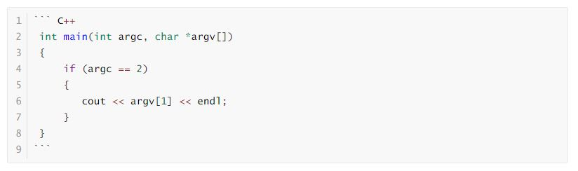

Markdown 是什么？它是一门标记语言，它能实现与 Microsoft Word 文字排版相似的功能。而这篇文章正是用 Markdown 语言编写的，我们使用它来进行文字的排版。

行文结构
标题
使用井号 “#” 来调整标题的大小。实例代码如下：
一级大标题
二级标题
三级标题
以此类推
> 效果如下：
> 
> ## 分割线
> 使用三个横线 “\-\-\-” 来实现分割线，实例代码如下> 效果如下：
>
> ---
>
> # 段落文字
> ## 粗体
> 使用两个星号 “\*\*” 包围住想要加粗的字体，代码如下：（其中的符号 “\*\*” 也可以用 “\_\_” 替代，注意不带空格）我是粗体
> 效果如下：
> **我是粗体**
> ## 斜体
> 使用一个星号 “\*” 包围住想要加粗的字体，代码如下：（其中的符号 “\*” 也可以用 “\_” 替代，注意不带空格）我是斜体
> 效果如下：
> *我是斜体*
> 如果想要粗斜体，则使用三个星号 “\*\*\*” 包围即可。
> ## 引用
> 此处的引用指的是在段落的前方出现一条竖线，代码如下：Markdown is a lightweight markup language with plain text formatting syntax. Its design allows it to be converted to many output formats, but the original tool by the same name only supports HTML.
效果如下： > Markdown is a lightweight markup language with plain text formatting syntax. Its design allows it to be converted to many output formats, but the original tool by the same name only supports HTML.
列表
列表分为有序列表和无序列表，代码如下：（其中的符号 “-” 也可以用 “*” 或 “+” 替代）
- 无序列表A - 无序列表B 1. 有序列表A 2. 有序列表B效果如下：
- 无序列表A
- 无序列表B
- 有序列表A
- 有序列表B
选择框
选择框类似windows的勾选框框，代码如下：
- [ ] 不勾选 - [x] 勾选效果如下：
- 不勾选
- 勾选
超链接
代码如下：
[Karbo的博客](http://www.karbo.online)效果如下：
Karbo的博客
特殊部件
代码段
代码段一般支持高亮功能，用于显示代码，示例代码如下：

代码段被三个反引号包括（即数字1左边的那个符号），在其后可以指定编程语言的类型。
效果如下：
int main(int argc, char *argv[])
{
if (argc == 2)
{
cout << argv[1] << endl;
}
}表格
第一列左对齐、第二列居中、第三列右对齐的表格，实现代码如下：
| 1 | 2 | 3 | | :--- | :--: | ---: | | 4 | 5 | 6 | | 7 | 8 | 9 |效果如下：
| 1 | 2 | 3 |
|---|---|---|
| 4 | 5 | 6 |
| 7 | 8 | 9 |
图片
可以在 Markdown 中嵌入图片，示例代码如下：

- 其中 “图片的描述” 为用来描述图片的关键词，可以不写。最初的本意是当图片因为某种原因不能被显示时而出现的替代文字，后来又被用于SEO，可以方便搜索引擎根据描述关键词搜索到图片。
- 其中 “图片的路径” 可以使用绝对路径、相对路径，或是图片网址。
如果你的 Markdown 编辑器是 Typora，则可以通过在 Front Matter 中配置 typora-root-url 的值来指定寻找图片的根路径。- 其中 “鼠标悬浮于图片时显示的文字” 为可选选项，可以不填。
除此之外，插入图片还有类似于 reference 的方式，示例代码如下：以下是我们的图片啦： ![GitHub][github] 以上为我们的图片了。上述代码则会在 “以下是我们的图片啦：” 和 “以上为我们的图片了。” 之间插入图片。 相当于为图片创建了一个id，叫 github，以后使用图片只需要`![][github]`这样就可以啦。而`[github]: https://avatars2.githubusercontent.com/u/3265208?v=3&s=100 "GitHub,Social Coding"`这句话则不会显示，因为它是用来指明 github 是什么图片的语句。 效果如下： 以下是我们的图片啦： ![GitHub][github] 以上为我们的图片了。 [github]: https://avatars2.githubusercontent.com/u/3265208?v=3&s=100 "GitHub,Social Coding"
其他
Markdown 还支持画流程图、时序图、甘特图等
因为不常用，这里就不一一列出使用方法了，网上有教程。